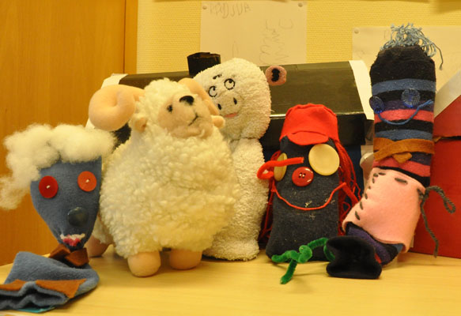

|
Startsidan
Böcker
Dramatik
Kultur-/barnprojekt
Margareta Lindberg |
|

|
|
Det börjar med ett rop på hjälp
Eleverna i samtliga 16 klasser i Sjökarby skola i Österåkers kommun nås av en vädjan om hjälp. Nödropet når dem på olika sätt. F-klasserna och ettorna nås av budskapet genom att jag kommer till dem och berättar. Tvåorna får brev i stora mystiska paket med många stämplar och märken. 3:or, 4:or och 5:or får flaskpost med chiffernycklar och uppgift om att ett kodat meddelande avsänts från London med luftballong. (Ett barn fastnar så illa med fingret i flaskhalsen att det måste föras till sjuksyster för att befrias.) De tre särskoleklasserna hittar en jättelik luftballongen som har fastnat i ett träd. I korgen ligger en trälåda som är förseglad med lack, ett litet "hittebarn", en liten kanin och ett litet lamm. De små dockorna har alla har pyttesmå lappar där upphittaren uppmanas att ta hand om dem och bygga trevliga hem åt dem. I lådan finns ett förseglat brev där det står: Denna Luftballong har sänts från London med hemliga meddelanden till Sjökarby Skola Österåker Sverige. Vi ber dig som hittar ballongen att lämna de brev som finns i botten på detta skrin till rätt klasser i denna skola. Breven är rullade och lackade och försedda med fina träklåpar med namn på de klasser som ska ha dem. Särskolebarnen bär i triumf in ballongen vid storsamlingen för årskurs 3-5. Breven är skrivna i chiffer, men med hjälp av kodnycklarna som kom med flaskpost listar mottagarna snart ut vad det står. Lösningen är en adress till Radio Smallnews i London, där man på nätet kan höra reportern Sara Snooper intervjua Noppe Banlon, en medlem av ett utrotningshotat småfolk. Han framför samma vädjan som alla elever nu nåtts av.: I garderober och lådor i hela världen ligger strumpor och vantar bortglömda och känner sig helt värdelösa. Hjälp till att ge dem ett nytt liv med litet fyllning, ögon och annat som ger karaktär. Alla elever och lärare gjorde små strump- och vantfigurer. Figurerna fick namn och karaktär. De kallades småttisar efter att alla elever fått rösta fram vad de skulle heta. Eftersom det var valtider gjordes valet som ett riktigt politiskt val med autentiska valskärmar och valkampanjer för olika förslag. Detta blev en anledning till att tala om rösträtt och demokrati på den nivå som lärarna ansåg passade de egna elevernas ålder och mognadsnivå. Eleverna byggde hem åt sina småttisar och allt var frid och fröjd. Då händer något fasansfullt. Det kommer upp löpsedlar på väggarna, som skriker ut att den fasansfulle Jack Uppreparen varit synlig på trakten. Han ligger på lur för små stickade figurer och repar upp dem om han kommer åt. Plötsligt ligger de krusiga garnresterna efter en småttis på golvet i en korridor. Nu smyger sig paniken på. MEN på fritids har man kommit på ett sätt att skydda småttisarna. De bygger en tidsmaskin och under högtidliga ceremonier och stora ljus och ljudeffekter reser småttisarna iväg i tid och rum. Eleverna kommunicera med dem via mail och brev. Jag och lärarna styrde en del av kommunikationen dels genom att svara på elevernas brev, dels genom att vi skickade brev från småttisarna där de ber eleverna om information och råd. Det kunde gälla konflikter som brutit ut bland tidsresenärerna eller faktafrågor. När lärare och elever ville ha tillbaka småttisarna slumpade det sig så lyckligt att man på nya löpsedlar kunde läsa att Jack Uppreparen infångats och hamnat i kurran. Ett storyline-projekt ger oändliga möjligheter att inspirera eleverna till kunskapsinhämtning och reflektion genom att det skapar engagemang och lärglädje. |